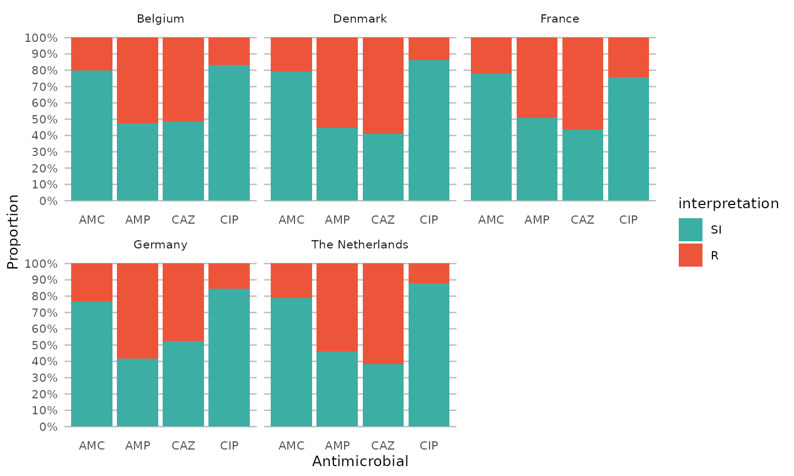

Import of data
This tutorial assumes you already imported the WHONET data with
e.g. the readxl
package. In RStudio, this can be done using the menu button ‘Import
Dataset’ in the tab ‘Environment’. Choose the option ‘From Excel’ and
select your exported file. Make sure date fields are imported
correctly.
An example syntax could look like this:
library(readxl)
data <- read_excel(path = "path/to/your/file.xlsx")This package comes with an example
data set WHONET. We will use it for this analysis.
Preparation
First, load the relevant packages if you did not yet did this. I use the tidyverse for all of my analyses. All of them. If you don’t know it yet, I suggest you read about it on their website: https://www.tidyverse.org/.
library(dplyr) # part of tidyverse
library(ggplot2) # part of tidyverse
library(AMR) # this package
library(cleaner) # to create frequency tablesWe will have to transform some variables to simplify and automate the analysis:
- Microorganisms should be transformed to our own microorganism codes
(called an
mo) using our Catalogue of Life reference data set, which contains all ~70,000 microorganisms from the taxonomic kingdoms Bacteria, Fungi and Protozoa. We do the tranformation withas.mo(). This function also recognises almost all WHONET abbreviations of microorganisms. - Antimicrobial results or interpretations have to be clean and valid.
In other words, they should only contain values
"S","I"or"R". That is exactly where theas.sir()function is for.
# transform variables
data <- WHONET %>%
# get microbial ID based on given organism
mutate(mo = as.mo(Organism)) %>%
# transform everything from "AMP_ND10" to "CIP_EE" to the new `sir` class
mutate_at(vars(AMP_ND10:CIP_EE), as.sir)No errors or warnings, so all values are transformed succesfully.
We also created a package dedicated to data cleaning and checking,
called the cleaner package. Its freq()
function can be used to create frequency tables.
So let’s check our data, with a couple of frequency tables:
# our newly created `mo` variable, put in the mo_name() function
data %>% freq(mo_name(mo), nmax = 10)Frequency table
Class: character
Length: 500
Available: 500 (100%, NA: 0 = 0%)
Unique: 38
Shortest: 11
Longest: 40
| Item | Count | Percent | Cum. Count | Cum. Percent | |
|---|---|---|---|---|---|
| 1 | Escherichia coli | 245 | 49.0% | 245 | 49.0% |
| 2 | Coagulase-negative Staphylococcus (CoNS) | 74 | 14.8% | 319 | 63.8% |
| 3 | Staphylococcus epidermidis | 38 | 7.6% | 357 | 71.4% |
| 4 | Streptococcus pneumoniae | 31 | 6.2% | 388 | 77.6% |
| 5 | Staphylococcus hominis hominis | 21 | 4.2% | 409 | 81.8% |
| 6 | Proteus mirabilis | 9 | 1.8% | 418 | 83.6% |
| 7 | Enterococcus faecium | 8 | 1.6% | 426 | 85.2% |
| 8 | Staphylococcus capitis | 8 | 1.6% | 434 | 86.8% |
| 9 | Enterobacter cloacae | 5 | 1.0% | 439 | 87.8% |
| 10 | Enterococcus columbae | 4 | 0.8% | 443 | 88.6% |
(omitted 28 entries, n = 57 [11.4%])
# our transformed antibiotic columns
# amoxicillin/clavulanic acid (J01CR02) as an example
data %>% freq(AMC_ND2)Frequency table
Class: factor > ordered > sir (numeric)
Length: 500
Levels: 3: S < I < R
Available: 481 (96.2%, NA: 19 = 3.8%)
Unique: 3
Drug: Amoxicillin/clavulanic acid (AMC, J01CR02)
Drug group: Beta-lactams/penicillins
%SI: 78.59%
| Item | Count | Percent | Cum. Count | Cum. Percent | |
|---|---|---|---|---|---|
| 1 | S | 356 | 74.01% | 356 | 74.01% |
| 2 | R | 103 | 21.41% | 459 | 95.43% |
| 3 | I | 22 | 4.57% | 481 | 100.00% |
A first glimpse at results
An easy ggplot will already give a lot of information,
using the included ggplot_sir() function:
data %>%
group_by(Country) %>%
select(Country, AMP_ND2, AMC_ED20, CAZ_ED10, CIP_ED5) %>%
ggplot_sir(translate_ab = "ab", facet = "Country", datalabels = FALSE)